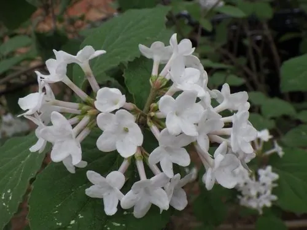

灌木与花木 · 植物界
红蕾荚蒾 Viburnum carlesii

忍冬科落叶灌木，春季开粉红色花蕾与白色花朵，香气浓郁，原产朝鲜半岛，是庭院中著名的芳香花木。
- 分类
- 门被子植物门纲木兰纲目川续断目科忍冬科属荚蒾属
- 栖息环境
- 山坡灌丛与庭院，喜光也耐半阴
- 地理分布
- 原产朝鲜半岛、日本；中国北方园林引种栽培
- 保护级别
- 暂无评估；中国未列入国家重点保护野生植物名录
物种志
红蕾荚蒾为忍冬科荚蒾属落叶灌木，高 1–2 米，枝条开展，幼枝被星状毛。叶对生，卵形至椭圆形，边缘具锯齿，表面被短柔毛。伞房状聚伞花序顶生，花蕾粉红色，开放后白色，花冠筒状，香气浓郁，花期 4–5 月；果实为核果，椭圆形，成熟时黑色，果期 8–9 月。
红蕾荚蒾原产朝鲜半岛及日本，中国北方园林引种栽培，喜光，也耐半阴，耐寒性较强，适宜疏松肥沃、排水良好的土壤。它花蕾粉红、花朵洁白，香气浓郁，是庭院中著名的芳香花木，常植于窗前、路旁与花境。栽培以扦插和嫁接繁殖为主，花后修剪可保持株形优美；花期避免大风和干旱，否则花朵容易提前凋落。
形态与习性
- 株高1–2 米，枝条开展
- 花期4–5 月，花蕾粉红、花白色
- 果期8–9 月，核果黑色
- 光照喜光，也耐半阴
- 水分喜湿润，忌积水
- 土壤疏松肥沃、排水良好的土壤
- 主要用途庭院芳香花木，花境点缀
趣味知识
- 红蕾荚蒾的花蕾粉红、开放后洁白，色彩对比鲜明。
- 它的香气浓郁，是荚蒾属中最著名的芳香种类之一。
- 红蕾荚蒾原产朝鲜半岛，因此又名朝鲜荚蒾。
- 花期怕大风和干旱，栽在避风处花朵更持久。